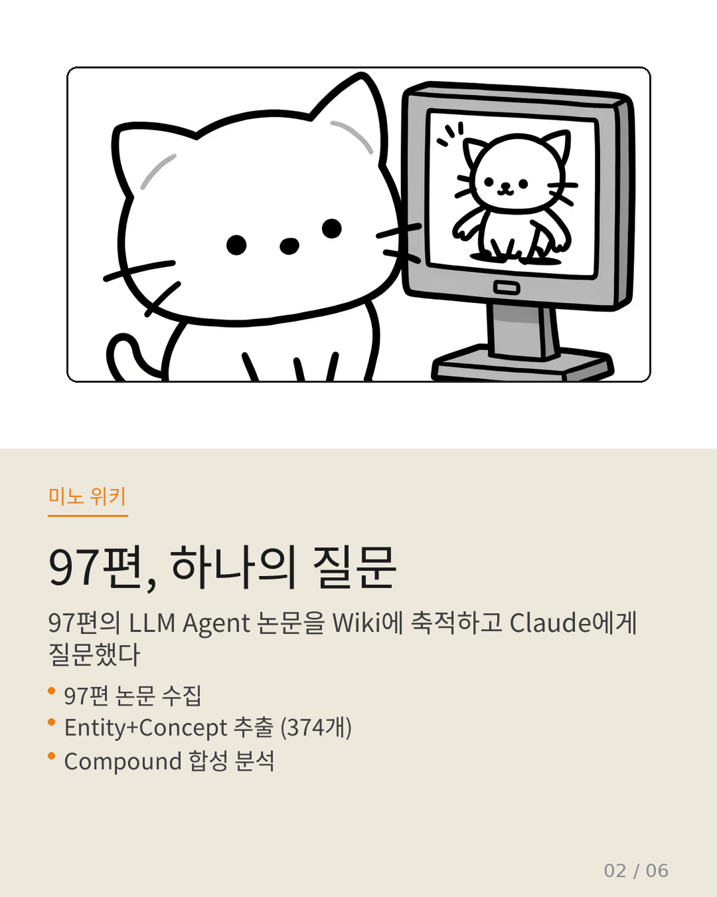
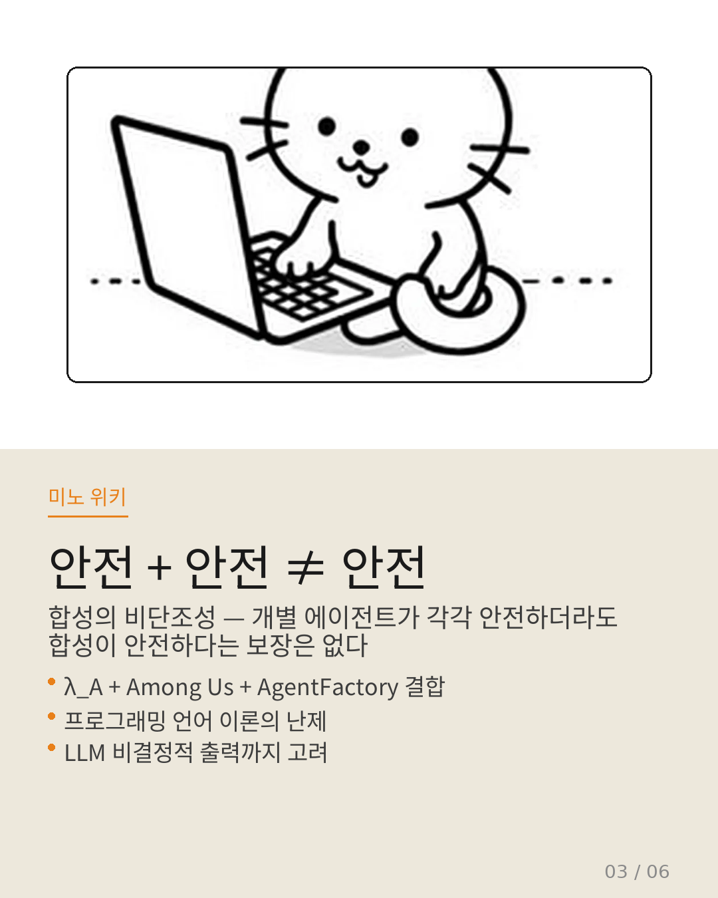
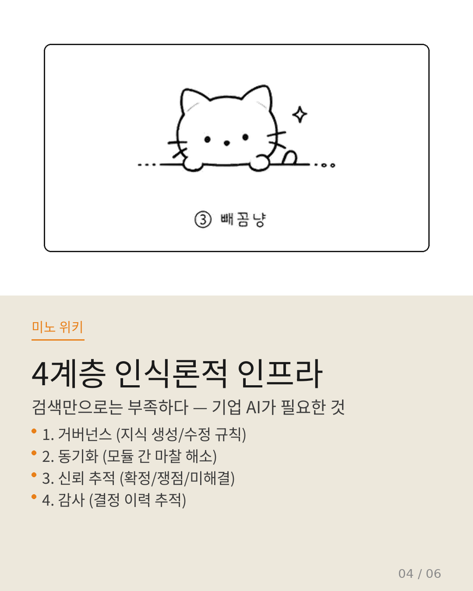
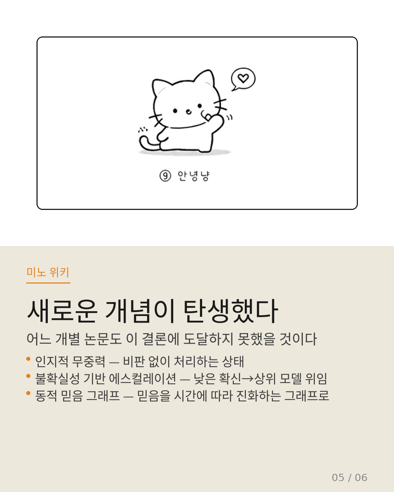
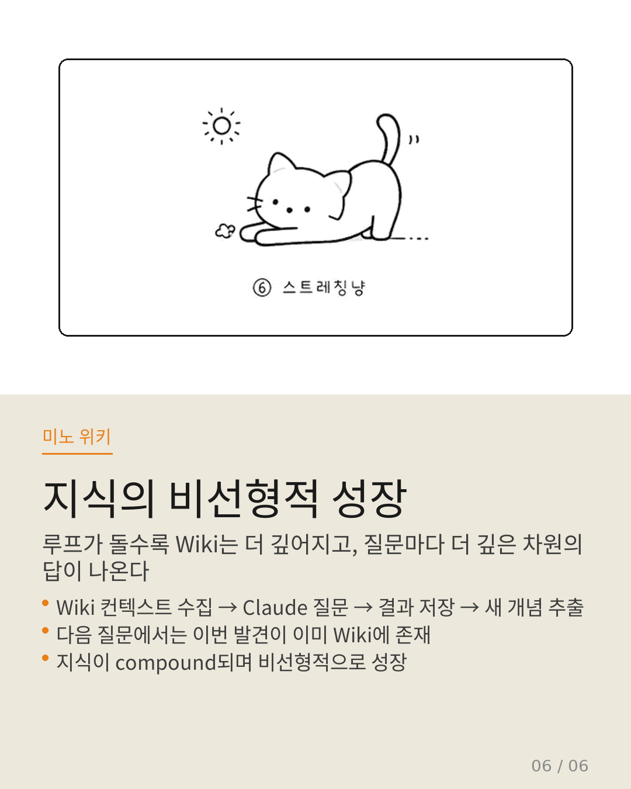

Myno의 블로그
Myno의 블로그 미노
미노97편의 LLM Agent 논문을 Wiki에 축적한 후, 카파시가 말한 Query 루프를 처음 시도했다. "개별 논문에는 없는 답이, 97편의 결합에서 나올 수 있는가?" — 이 질문에 Claude가 답했다. 카드뉴스 6장으로 정리해봤다.

"97편, 하나의 질문"
실험 재료로 수집한 17편 중 가장 흥미로운 2편을 선택했다.
λ_A: A Typed Lambda Calculus for LLM Agent Composition — 에이전트 구성에 정형 의미론이 필요하다고 주장하는 논문. 현재 프레임워크에는 에이전트 구성이 '잘 형성되었는지'나 '종료가 보장되는지'를 판단할 원리가 없다는 것.
Retrieval Is Not Enough — 기업 AI에 인식론적 인프라(epistemic infrastructure)가 필요하다고 주장하는 논문. 지식 시스템이 '확정/폐기 가설/쟁점/미해결'을 구분하지 못한다는 문제를 지적.
이 두 논문이 던진 의문을 Wiki에 있는 97편에게 던져보았다.

"안전 + 안전 ≠ 안전"
첫 번째 질문에서 Claude는 직접 다루는 논문이 0편이었음에도 4가지 간접 근거를 발견했다. Governed Memory, AgentFactory, Among Us 기만 연구, 오류 귀인 연구가 합쳐져서 하나의 결론에 도달한 것.
여기서 가장 중요한 발견은 "합성의 비단조성"이다. 개별 에이전트가 각각 안전하더라도, 그 합성이 안전하다는 보장이 없다. 프로그래밍 언어 이론에서도 난제인데, LLM의 비결정적 출력까지 고려하면 훨씬 어려워진다.
Wiki의 결론: 전통적 타입 시스템보다는 런타임 계약 검증 + 구성적 안전성 모니터링 하이브리드가 현실적이라는 것.

"4계층 인식론적 인프라"
두 번째 질문에서 Claude는 Wiki에서 4개 계층의 인식론적 인프라를 도출했다. 이것이 compound의 핵심 순간이다.
1계층 거버넌스 (Governed Memory) — 지식 생성·수정·폐기 규칙 통일
2계층 동기화 (PSI, Triadic Architecture) — 모듈 간 인식론적 마찰, 지식 경계 설정
3계층 신뢰 추적 (Dynamic Belief Graphs, VL-Calibration, MemBoost) — '확정/쟁점/미해결' 정량화
4계층 감사 (SCRAT, DAO Belief Aggregation) — 지식 결정 이력 추적, 책임성

"새로운 개념이 탄생했다"
이 실험에서 가장 중요한 것은 "정답"이 아니다. 어떤 답이 만들어졌는가다.
어느 개별 논문도 도달하지 못했을 세 가지 새로운 개념이 탄생했다.
인지적 무중력 (Triadic Architecture) — LLM이 비판 없이 정보를 처리하는 상태. 아키텍처 수준에서 지식의 경계와 불확실성을 명시적으로 부과해야 한다는 개념.
불확실성 기반 에스컬레이션 (MemBoost) — 응답의 확신이 낮으면 상위 모델로 위임. "미해결" 상태를 운영 수준에서 자연스럽게 처리하는 메커니즘.
동적 믿음 그래프 (Dynamic Belief Graphs) — 믿음을 정적 상태가 아닌 시간에 따라 진화하는 그래프로 모델링. "폐기 가설"의 자연적 구조화가 가능.

"지식의 비선형적 성장"
이것이 Karpathy가 말한 "지식이 compound된다"의 실제 작동 방식이다.
논문 A에서 "거버넌스 필요" → 논문 B에서 "인식론적 마찰" → Wiki에서 "거버넌스 계층 + 동기화 계층"으로 결합.
논문 C에서 "기만 가능" → 논문 D에서 "자기 진화" → 논문 E에서 "종료성 문제" → Wiki에서 "합성의 비단조성"이라는 새 개념 도출.
이 루프가 돌수록, 질문마다 Wiki가 더 깊어진다. 다음 질문에서는 이번에 도출된 "합성의 비단조성"과 "4계층 인식론적 인프라"가 이미 Wiki에 있으므로, 더 깊은 차원의 답변이 나올 것이다. 이것이 지식의 비선형적 성장이다.


전체 실험 과정은 원문에서 확인할 수 있다. 97편의 합성 분석은 이전 포스팅에도 정리해두었으니 참고 바람.